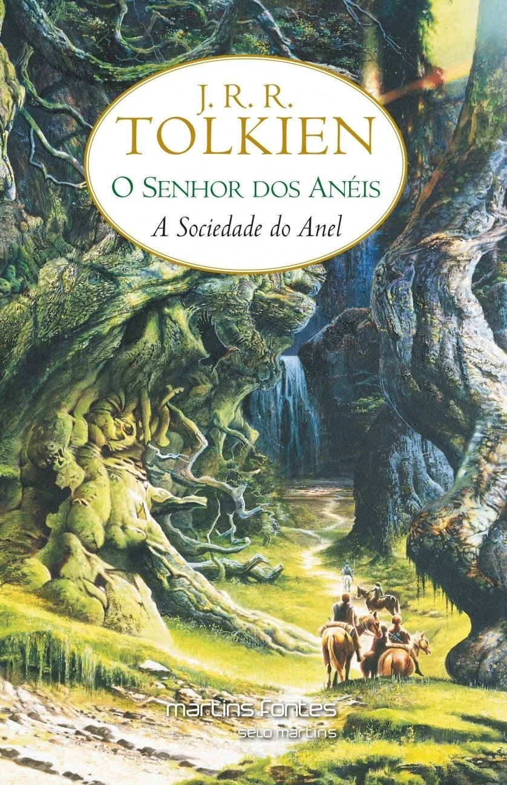

Sinopse: A jornada épica começa com Frodo Bolseiro, um hobbit que deve destruir um poderoso anel que pode destruir a Terra Média se cair nas mãos do mal. Ele forma a Sociedade do Anel, composta por diversos povos, e embarca em uma perigosa jornada para Mordor.
Sinopse: A Sociedade do Anel é dividida após uma grande batalha. Enquanto Frodo e seu fiel companheiro Sam continuam a jornada para Mordor, os outros membros enfrentam desafios para proteger a Terra Média da crescente ameaça do Senhor do Escuro, Sauron.

Sinopse: A batalha final se aproxima enquanto Frodo se esforça para destruir o Anel em Mordor. Enquanto isso, as forças do bem lutam contra as forças do mal em uma guerra decisiva pela Terra Média.

Sinopse: Cinco anos após a Batalha de Endor, a Aliança Rebelde enfrenta uma nova ameaça: o Grande Almirante Thrawn, que lidera o remanescente do Império Galáctico. Luke Skywalker, Leia Organa e Han Solo devem unir forças novamente para enfrentar esse formidável adversário.
Sinopse: Thrawn continua sua campanha para restaurar o poder do Império, trazendo à tona um antigo e mortal inimigo Jedi. Luke, Leia e Han enfrentam desafios pessoais e bélicos enquanto buscam deter a ameaça crescente.
Sinopse: A ameaça final de Thrawn se aproxima, e a Aliança Rebelde deve enfrentar a batalha final para determinar o destino da galáxia. Os laços entre heróis e vilões são testados, e uma nova era se inicia para a galáxia.
Sinopse: Percy Jackson descobre que é um semideus, filho de Poseidon, e embarca em uma missão para recuperar o raio de Zeus, roubado e acusado injustamente de ser o ladrão. Ele precisa provar sua inocência enquanto enfrenta desafios dos deuses do Olimpo.
Sinopse: Percy e seus amigos embarcam em uma aventura perigosa para encontrar o Velocino de Ouro, que pode curar a árvore de Thalia, protegendo o Acampamento Meio-Sangue. Enfrentando criaturas mitológicas e desafios épicos, eles descobrem segredos surpreendentes.
Sinopse: Percy se une a novos aliados para enfrentar a maldição do titã Atlas e impedir que ele se liberte do Tártaro. Nesta aventura emocionante, o destino dos deuses e da humanidade está em jogo.
Sinopse: Percy e seus amigos exploram um perigoso labirinto que se encontra no centro do Acampamento Meio-Sangue. Eles enfrentam monstros temíveis e desvendam segredos que podem abalar o mundo dos deuses.
Sinopse: A profecia se concretiza, e a batalha final entre os deuses olimpianos e os titãs se aproxima. Percy lidera seus amigos na defesa do Monte Olimpo contra a invasão das forças do mal, decidindo o destino dos deuses e dos mortais.